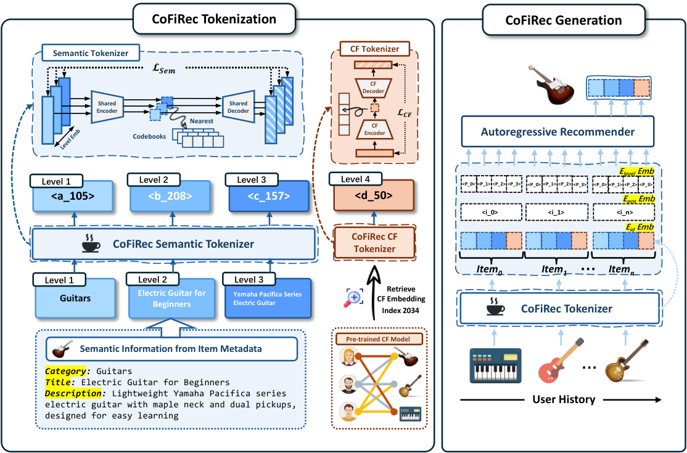
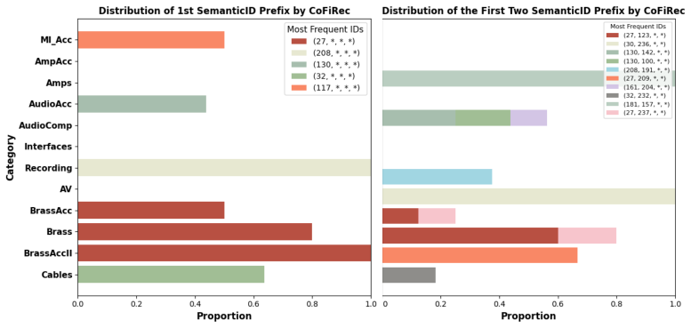

目录 · 10 节
1它到底在解决什么问题？2整体流程：先分层编号，再从粗到细生成3编号器：每一层文字单独编一位4为什么最后一位要放协同过滤？5生成时怎么让模型知道每一位的角色？6为什么从粗到细生成更好？一个能手算的例子7实验结果：真的更好吗？8我认为它的局限9一个推荐团队可以怎么试10结论与评价做生成式推荐、正在设计物品编号的团队值得读。它没有改生成模型，改的是物品编号怎么来：现有做法把类目、标题、描述揉成一个向量再切成编号，编号的每一位没有明确含义；CoFiRec 让编号的前几位分别对应类目、标题、描述，最后一位留给协同过滤信号，生成时从粗到细一位位往下定。这篇来自伊利诺伊大学厄巴纳-香槟分校和 Meta 的工作在三个公开数据集的 Recall@10 和 NDCG@10 上都排第一；在乐器数据集上，Recall@10 从 TIGER 的 0.1035 提到 0.1118；很少被交互的冷启动物品上，Recall@10 从 0.0801 提到 0.0943，提升幅度比热门物品更大。
它到底在解决什么问题？
生成式推荐给每件物品编一串离散编号（Semantic ID），模型按用户历史一位一位地生成下一件物品的编号。TIGER 等主流做法的编号是这样来的：把物品的类目、标题、描述拼成一段文字，编码成一个向量，再用残差量化切成几位编号。残差量化的意思是第一位编号先粗略逼近这个向量，第二位编号再逼近剩下的误差，以此类推。
这样切出来的编号虽然也有先后，但每一位代表什么说不清。一个例子（示意）：用户最近买了吉他弦和拨片，下一件想买入门电吉他。
| 编号位 | TIGER 式编号的含义 | CoFiRec 编号的含义 |
|---|---|---|
| 第 1 位 | 向量的粗略近似，可能混着类目和品牌 | 类目：吉他 |
| 第 2 位 | 第 1 位剩下的误差 | 标题：入门电吉他 |
| 第 3 位 | 再剩下的误差 | 描述：雅马哈 Pacifica 系列 |
| 第 4 位 | 再剩下的误差 | 协同过滤：和哪些物品常被一起购买 |
（表中物品和含义为示意，编号结构来自论文图 2。）
作者的出发点是用户逛商品本来就是从粗到细：先定类目，再定类型，再定系列，最后定具体哪一件。如果编号也按这个顺序排，模型第一步只需要判断“下一件是不是吉他类”，后面每一步都在前一步定好的范围里细分。编号每一位有明确含义，模型每一步要做的判断就更简单，也更不容易一步错、步步错。
整体流程：先分层编号，再从粗到细生成

整个流程分两段：
- 编号器：每件物品生成四位编号。前三位分别来自类目、标题、描述三段文字，最后一位来自协同过滤向量。
- 生成模型：用 T5 读入用户历史的编号序列，按第 1 位到第 4 位的顺序生成下一件物品的编号，用束搜索（每步保留得分最高的 20 条候选路径）得到推荐列表。
关键分工是：文字信息负责把范围从类目一路缩到具体款式，协同过滤信号负责在长得很像的物品之间做最后的区分。下面拆开讲。
编号器：每一层文字单独编一位
为什么不把文字揉在一起？揉在一起后，类目和描述的信息混在同一个向量里，切出来的每一位都同时带着两种信息，前几位也就不再对应“粗”的类目。
CoFiRec 的做法是：类目、标题、描述三段文字各自用 LLaMA-7B 编码成向量，经过一个三层共用的小网络投影，再在这一层自己的码本里找最近的码字，码字的序号就是这一位编号。每层码本各自独立，所以第 1 位编号只可能是类目码本里的某个序号。少数物品缺类目字段时，作者从标题或描述里抽取类目词补上。
训练编号器的目标有两个：一是从码字能还原出原来的向量（重建损失），二是让投影后的向量别离选中的码字太远，保证码字使用稳定。
为什么最后一位要放协同过滤？
两件文字描述几乎一样的物品，比如同系列两种颜色的电吉他，靠文字分不开。协同过滤向量记录的是“哪些用户买了它、它常和什么一起买”，正好能区分这种情况。CoFiRec 从预训练的 SASRec 里取出每件物品的向量，用单独的编码器和码本编成第 4 位。
放在最后，是因为这一位在前三位已经定下类目和款式之后才最有用：模型已经确定是“雅马哈入门电吉他”，此时再根据用户的购买习惯决定具体哪一件。消融实验也支持这一点：把第 4 位换成又一层文字编号，Recall@10 从 0.1118 降到 0.1082。
生成时怎么让模型知道每一位的角色？
生成模型读入的是一长串编号，如果不加提示，它分不清某个编号是类目还是协同过滤。CoFiRec 给每个编号的输入向量加了两种可学习的向量：一种表示“这是第几层”，一种表示“这是历史里第几件物品”。训练时，每一层都用 softmax 比较正确编号和这一层其他编号的得分，让正确编号排在前面。
为什么从粗到细生成更好？一个能手算的例子
作者给了一个简化的理论分析。把所有物品看成一棵四层树，每件物品是一片叶子。两件物品的“差距”定义为它们从第几层开始分叉：在第 3 层才分叉，说明类目和类型都对了，只差系列和具体款式，差距记为 2；第 1 层就分叉，差距记为 4。
假设模型每一层猜对的概率都是 0.5（示意）。从粗到细生成时，第 1 层猜对的概率是 0.5，前两层都对是 0.25，前三层都对是 0.125，四层全对是 0.0625。期望差距等于 4 减去这四个概率之和，约为 3.06。对照的是编号没有层级的情况：各位编号不对应从粗到细的含义，预测出的物品和正确物品在树上是否同枝只能靠运气。论文把这种情况近似成在全部叶子里等概率地选一片，那么第 1 层碰巧相同的概率只有 1/V（V 是每层的编号数，示意取 256，就是约 0.004），前两层都相同是 1/V²，期望差距几乎就是 4。作者的理由是：没有层级时，即使某一位编号猜对了，也不代表预测物品和正确物品属于同一类，猜对的那一位对“接近程度”没有贡献，所以近似成随机选叶子。我认为这个论证的意义在于说明有了层级，部分猜对才算数：没猜中具体物品时，结果也更可能落在同一个类目里。但两种设定的条件并不完全对等，不能当作严格证明，真正的证据还是下面的实验。
实验结果：真的更好吗？
数据是 Amazon 的乐器（Instruments）和美妆（Beauty）两个品类，以及 Yelp 商户点评，每个用户最后一次交互做测试。下表摘自论文表 1：
| 数据集 | 指标 | SASRec | TIGER | IDGenRec | CoFiRec |
|---|---|---|---|---|---|
| Instruments | Recall@10 | 0.0947 | 0.1035 | 0.0999 | 0.1118 |
| Instruments | NDCG@10 | 0.0690 | 0.0782 | 0.0785 | 0.0820 |
| Beauty | Recall@10 | 0.0588 | 0.0353 | 0.0550 | 0.0679 |
| Beauty | NDCG@10 | 0.0313 | 0.0283 | 0.0311 | 0.0370 |
| Yelp | Recall@10 | 0.0296 | 0.0270 | 0.0323 | 0.0395 |
| Yelp | NDCG@10 | 0.0152 | 0.0173 | 0.0195 | 0.0208 |
CoFiRec 在三个数据集的 Recall@10 和 NDCG@10 上都是最好的。这说明只改编号方式、生成模型照旧，就能稳定超过现有的生成式推荐方法。
编号顺序是否真的重要？把四位编号倒过来排，乐器数据集上 Recall@10 降到 0.1047；随机打乱顺序，降到 0.0991。这说明收益不只来自“分层编码”，从粗到细的顺序本身也在起作用。
冷启动实验里，作者统计每件物品在用户行为序列里作为最后一件（也就是真实的下一件）出现的次数，把次数最少的 2% 物品当作冷启动物品单独测试。Recall@10 上，热门物品从 TIGER 的 0.1038 提到 0.1101，冷启动物品从 0.0801 提到 0.0943，后者的提升明显更大。冷门物品交互很少，但有类目和标题，分层编号能把它放到和同类热门物品相同的前缀下，这是冷启动收益更大的原因。

我认为它的局限
第一，不是每个指标都赢。Yelp 上 NDCG@5 是 0.0162，略低于 IDGenRec 的 0.0165。点评商户的类目和描述不像商品那样层次分明，分层编号的优势会变小。
第二，换大模型做生成的实验规模偏小。论文在抽样后的乐器数据上比较 T5、LLaMA-1B、LLaMA-3B，LLaMA-3B 下 CoFiRec 的 Recall@5 和 Recall@10 都是 0.0403，说明测试样本太少，前 5 和前 10 拉不开差别，这组结论只能当方向参考。
第三，依赖规整的物品元数据。论文用 GPT-4o 从标题和描述自动生成层级做了补充实验，但只用了 1% 的用户和 2258 件物品。元数据混乱的业务里，第一层编号能否稳定对应类目，需要自己验证。
一个推荐团队可以怎么试
- 先检查元数据：看类目、标题、描述三个字段的覆盖率和质量，缺失多的话先试用大模型补层级。
- 只换编号器：保留现有生成模型和训练流程，把残差量化编号换成分层编号，对比 Recall@10 和 NDCG@10。
- 单独评估冷启动：按物品上架时间或交互次数切出新物品，看提升是否比热门物品更大，这是这套方法最可能带来实际收益的地方。
- 调码本大小：论文里第 3、4 位用 512 个码字比全部用 256 个更好，再加大到 1024 反而变差，可以从这组设置起步。
结论与评价
最关键的启发是：物品编号的每一位都应该有明确含义，而且顺序要和用户做决定的顺序一致。
| 维度 | 评价 |
|---|---|
| 问题重要性 | 高。编号质量直接决定生成式推荐的上限，冷启动又是生成式推荐常被期待解决的问题 |
| 方法创新性 | 中。分层编号的思路直观，新意在把文字层级、协同过滤和生成顺序组合成一套完整做法 |
| 实验证据 | 中。三个数据集、消融和冷启动分析都有，但数据规模偏小，换大模型的实验样本太少 |
| 工程成本 | 中。需要三次文字编码和单独的协同过滤编码，编号器训练成本高于普通残差量化 |
| 是否值得尝试 | 值得。元数据规整、冷启动物品多的商品推荐场景最适合先试 |
读完这篇，你觉得
夜读鸮记下了，谢谢你的反馈。
点一下即可，无需登录；再点一次撤回。只统计匿名次数，不记录你是谁。
讨论
欢迎补充实验细节、复现经验或不同看法。需 GitHub 登录。
正在加载讨论…